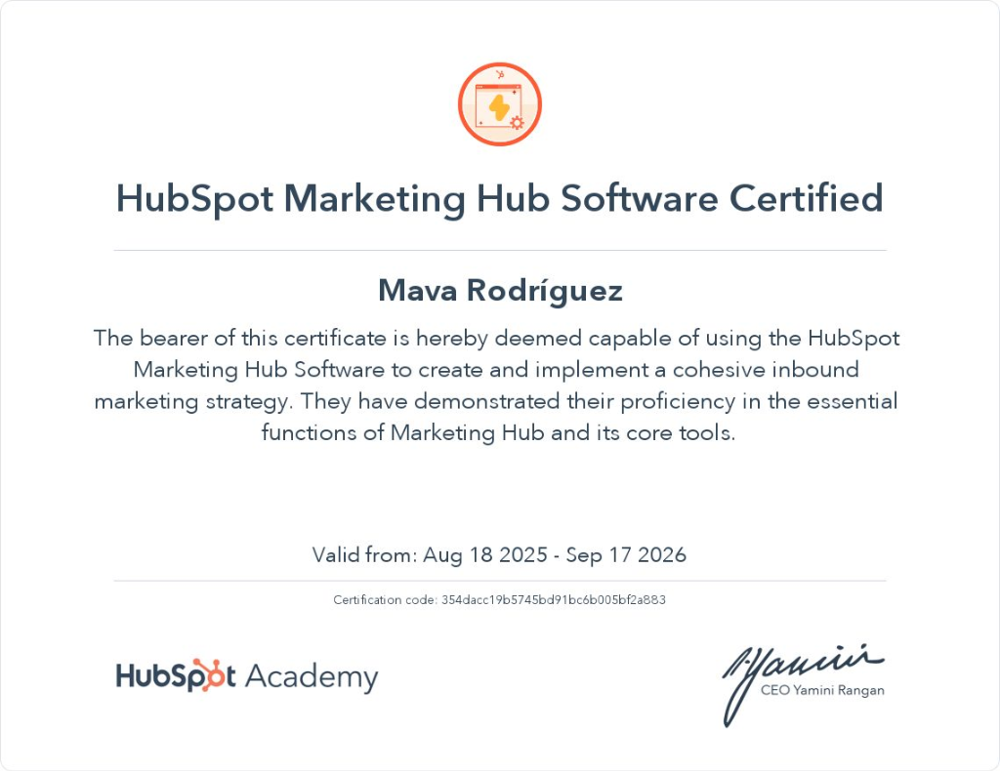
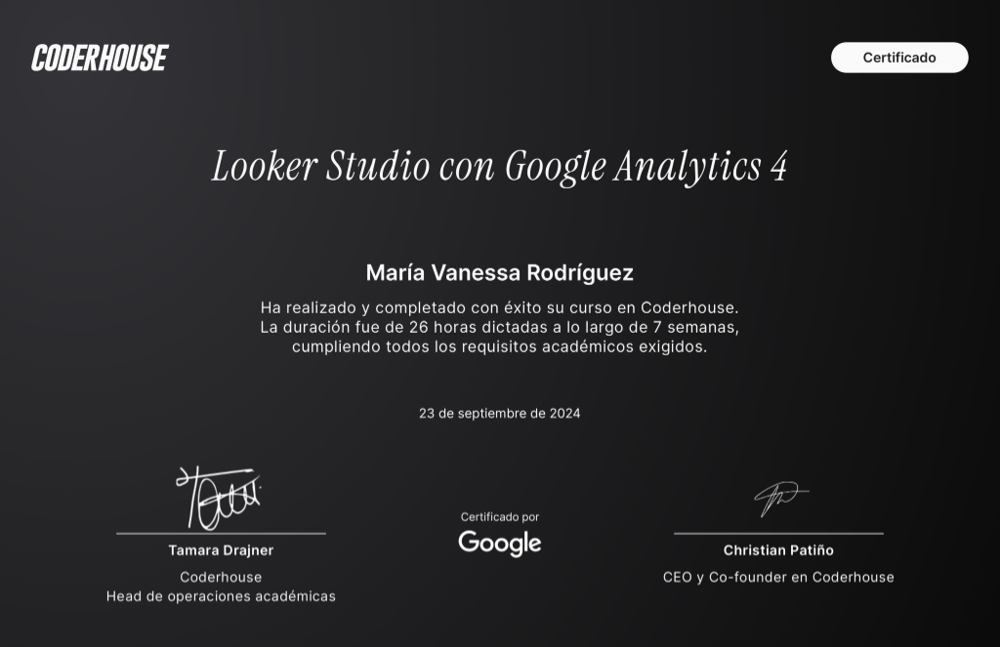
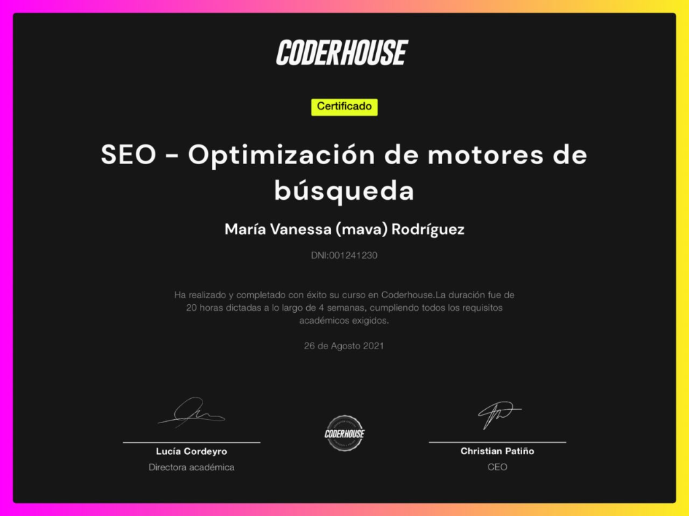
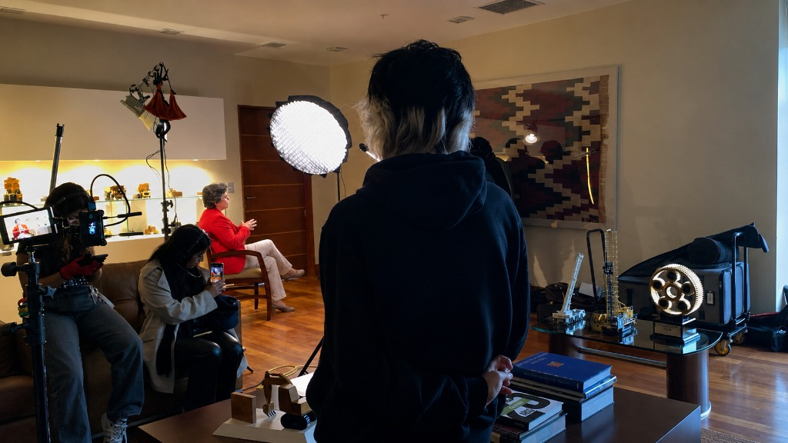

Mava Rodríguez
Brand Strategy & SEO | GEO | AEO | Contenido B2B | B2B SaaS & Tech
Especialista en visibilidad orgánica para productos B2B SaaS & Tech. Combino narrativa de marca, SEO técnico y optimización avanzada para motores de IA generativa (AEO/GEO) para estructurar el nuevo estándar del posicionamiento de marca.
Quién soy y qué propongo
Egresada en Publicidad y Marketing Digital con más de 9 años de experiencia en comunicación digital. Me especializo en posicionamiento de marca y visibilidad orgánica para productos B2B SaaS, Tech y plataformas digitales, liderando estrategias integradas que combinan narrativa de marca, SEO técnico y optimización para motores de IA generativa (AEO/LLM/GEO).
Me muevo con igual comodidad entre la estrategia y la ejecución: desde definir el concepto creativo de una campaña de impacto hasta optimizar un schema markup avanzado o analizar detalladamente el rendimiento en herramientas clave de analítica. Creo firmemente que las mejores estrategias nacen de entender profundamente a las personas, los datos y la cultura única de una marca.
// FUERA DEL TRABAJO: Apasionada por el gaming, la cultura digital y la música.
Mava Rodriguez
- SPEC: Brand & SEO & GEO
- IND: B2B SaaS, Tech
- EDU: Marketing Digital
- STATUS: READY FOR RETOS
Mi Historial Profesional
Brand & Content Specialist
Mandü HR (by VISMA) · Jornada completa · Híbrido
Lidero el posicionamiento estratégico de marca y la visibilidad orgánica de Mandü, integrando narrativa de marca, SEO técnico y optimización para motores de IA (AEO/LLM).
- Defino concepto creativo, narrativa y tono de comunicación transversal a todos los canales, asegurando coherencia estratégica y cultural de marca.
- Ejecuto posicionamiento orgánico en buscadores tradicionales y LLMs (ChatGPT, Gemini), con optimización técnica de H1, meta titles, meta descriptions, schema markup y enlazado interno estratégico.
- Conceptualizo campañas 360, coordinando con equipos de contenido, diseño y ventas.
- Gestiono el sitio web como activo digital estratégico: análisis de rendimiento y optimización continua mediante Google Search Console, Looker Studio, Screaming Frog, Ahrefs y Bing Webmaster Tools.
- Integro herramientas de inteligencia artificial (Claude, ChatGPT, Perplexity, Figma Make) en flujos de trabajo de contenido y SEO con foco en visibilidad en motores generativos.
Brand Analyst Senior
Mandü HR (by VISMA) · Jornada completa
Lideré el relanzamiento estratégico de la marca Mandü en Perú, desde la supervisión de la consultora externa y desarrollo web hasta la campaña de lanzamiento final.
- Supervisé el proceso de rebranding, incluyendo la creación del nuevo sitio web corporativo de la marca.
- Conceptualicé y lideré las campañas de lanzamiento "Anti software de RRHH" y "Más tecnología no es mejor tecnología", con foco en diferenciación y reposicionamiento en el mercado peruano.
- Gestioné en paralelo indicadores clave de generación de demanda (MQL/SQL) y supervisión de pauta digital.
Digital Marketing Strategist - LatAm
Visma · Jornada completa · En remoto
Responsable de la estrategia digital para Visma LatAm y sus marcas asociadas (Calipso, Laudus), con operación y coordinación en Perú y Argentina.
- Implementé y optimicé campañas de pauta en Meta y LinkedIn, logrando una reducción de bounce rate y mejora significativa en la calidad del tráfico y la generación de MQLs.
- Supervisé y reorienté la estrategia de Google Ads para Argentina, migrando el foco de consideración a conversión, lo que resultó en un aumento de leads calificados.
- Gestioné contenidos para la cuenta corporativa de Visma LatAm, alineando la narrativa regional con objetivos de marca.
- Supervisé la estrategia SEO en coordinación con la agencia aliada, aplicando aprendizajes directos al posicionamiento de hr.vismalatam.com.
- Realicé seguimiento comercial de actividades, propuestas y cierres provenientes de pauta, reportando métricas de rendimiento a la dirección de LatAm.
Content Creator
Mandü HR · Jornada completa · En remoto
Responsable de la estrategia global de contenido y la producción creativa integral para las marcas Mandü y Womandü.
- Desarrollé campañas creativas y grillas de contenido mensual para diversos canales digitales, asegurando la coherencia narrativa y los ejes temáticos de la marca.
- Redacté artículos de blog y guiones de podcast para Womandü, un espacio estratégico enfocado en el impacto de mujeres dentro del entorno laboral.
- Colaboré directamente en la supervisión de la pauta digital en plataformas como Google Ads y Meta junto al equipo de marketing.
- Inicié y desarrollé las primeras estrategias de SEO técnico enfocadas en el posicionamiento orgánico de www.mandu.pe.
Copywriter
Pasaporte Studio · Jornada completa · Presencial
Redactora creativa para diversas marcas comerciales e institucionales de la agencia.
- Diseñé y planifiqué las parrillas de contenido mensuales para marcas clave como Pet's Republic, Viajes Rosario, Repensar Educativo, Zuma, entre otras.
- Redacté artículos creativos, guiones y contenidos de alto impacto para diferentes formatos digitales.
- Lideré procesos de naming para nuevos productos del mercado (como KARPI).
Community Manager
Pasaporte Studio · Jornada completa · Presencial
Encargada del monitoreo, gestión y analítica de redes sociales para la cartera de clientes de la agencia.
- Realicé monitoreo constante de Social Media y moderación de comunidades online.
- Programé y configuré campañas publicitarias en Facebook Ads y Google Adwords.
- Fui responsable del research, benchmarking competitivo y la reportería cualitativa y cuantitativa de Social Media.
Fase de Prácticas Profesionales
Diversas Agencias Digitales
Inicios en el sector publicitario y digital como redactora y gestora de comunidades.
- Practicante Copywriter (Majo Cossio Boutique Creativa, jul. 2017 - ene. 2018): Desarrollo de contenidos creativos, grillas y paid ads para marcas pyme de sectores automotriz (Volkswagen, Hyundai) y salud dental.
- Practicante Community Manager (Nodos Digital, nov. 2016 - jul. 2017): Gestión de comunidades, benchmarks mensuales y apoyo en campañas de marcas masivas como Pepsi, Mallplaza, Vizzio y Fruna.
- Practicante ATL Copywriting (Yellow, mar. 2016 - jul. 2016): Ideación y redacción creativa tradicional para cuentas como VISA, Vicks y Nescafé.
Mi Stack de Especialidades
Brand & Content
DPM SYSTM // CE-
Brand Strategy & Rebranding 95%
-
Contenido B2B & Narrative 92%
-
Copywriting & Naming 90%
-
Conceptos Creativos / Campañas 88%
Advanced SEO & AI
SYS.SEO.AEO // 25-
SEO Técnico & On-Page 90%
-
AEO & GEO (AI Search Opt.) 85%
-
Google Search Console & Screaming Frog 88%
-
Ahrefs, Semrush & Looker Studio 85%
Tech & Productivity
SYS.TECH.PROD-
IA Generativa (Claude, ChatGPT) 92%
-
LinkedIn Ads & Meta Ads 80%
-
Figma & Make (Automations) 85%
-
Git & GitHub (Web deployment) 75%
Certificaciones & Ejecución
Certificaciones Validadas

Marketing Hub Certified
Código: 354dacc19b57...

Looker Studio & GA4

SEO - Optimización de Motores
Estrategia en la Práctica

Estrategia en la mesa, ejecución en el campo ↗
Liderando e implementando la dirección creativa y producción de contenidos multimedia de alto impacto corporativo. La comunicación digital premium no solo se planifica; se ejecuta con precisión técnica, narrativa consistente y el equipamiento adecuado en el set.
¡Hablemos de tu marca!
¿Buscas liderar el crecimiento orgánico de tu producto?
Estoy abierta a evaluar nuevas oportunidades como Brand Lead, SEO/GEO Manager o Content Strategist, particularmente en productos B2B SaaS y plataformas tecnológicas de alto crecimiento. Escríbeme y analicemos cómo hacer crecer tu visibilidad orgánica.